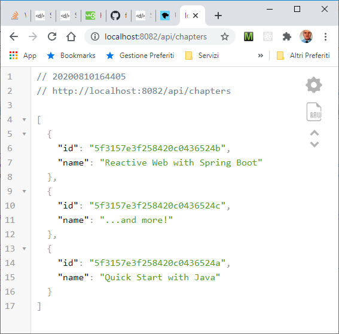
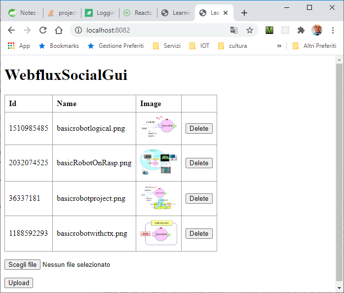
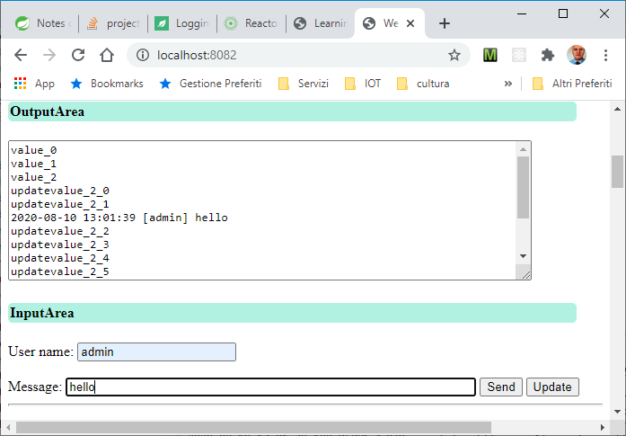
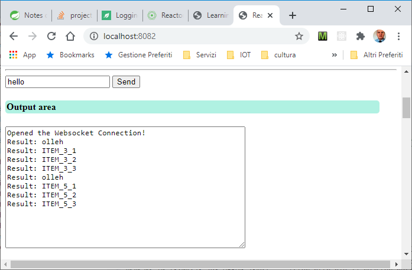

LabSpringIntro | Building WebFlux applications
Spring Framework Reference Documentation (5.0.0.BUILD-SNAPSHOT)
23. WebFlux framework
DISI: LabSpringIntro | Introduction to Spring Boot
DISI: LabSpringIntro | Introduction to Spring Boot
23. WebFlux framework
DISI: LabSpringIntro | Introduction to Spring Boot
DISI: LabSpringIntro | Introduction to Spring Boot
Overview
We report here a set of reactive application, all defined in the project webflux.intro.The src/resources/banner.txt is generated with patorjk.com/software/taag.
The dependencies defined in build.gradle (see Spring: Building Java Projects with Gradle) include:
- Basic Spring (
webflux, devtools, thymeleaf - Support for monitoring (
actuator, jmx - Reactive we sockets (
javax.websocket-api - Mongo in the on-memory testing version ((
mongodb-reactive, flapdoodle.embed.mongo - The Lombok tool for spicing up java (
lombok
The application can be started by uncommenting the annotation//@SpringBootApplication public class ApplicationXXX { ... }
The
Each of the following examples shows a page that explains its own structure and behavior.
- An application can be
inspected by calling: http://localhost:8082/actuator/health or /actuator/beans oractuator/metrics , ...
|
A (flapdoodle mongo) ChapterRepository is preloaded (in reactive way) at Configuration time
by LoadDatabase with a set of Chapters. The BasicMIController returns a Flux of Chapters when called with
Example taken from Chapter.java, ChapterRepository.java, LoadDatabase.java, BasicHIController.java, BasicMIController.java, Warning: Chapter.java has been modified to allow access to the fields id, name. |
 Usage (handled by BasicHIController.java):
|
Shows a set of images stored in the directory:upload-dir and allows
insertion/deletion of images.
Example taken from Image.java, ImageService.java, SocialHIController.java, SocialMIController.java, Warning: ImageService..findAllImages() has been modified to avoid the error: Iterator already obtained. |
 Usage (handled by SocialHIController.java):
|
Beyond HTTP
|
Shows the usage of
Server-Sent Events (SSE).
Example inspired by Florian Beaufumé webflux-sse-sample GIT. SseHIController.java, SseMIController.java MessageProcessor.java |
 Usage (handled by SseMIController.java):
|
|
Shows the usage of a reactive WebSocket.
Example inspired by faros/reactive-websockets.git. WebSockHIController.java, WebSockMIController.java, WebSocketHandlers.java, WebSocketConfiguration.java. |
 Usage (handled by WebSockHIController.java):
|
Start-up
- Connect to https://start.spring.io/
- Select Gradle Project, Java,
Group= it.unibo,Artifact= HealthAdapterFacade (Options :Packaging=Jar, Java=8),Dependencies
Spring Boot DevTools Spring WebFlux //Reactive Thymeleaf //For m2m interaction Websocket Lombok //Java annotation library which helps to reduce boilerplate code Spring Boot Actuator //monitor and manage the application
- Click on
Generate , unzip the generated file into your working dir and update andapplication.properties (port=8082 ):- Set some logo for human-to-machine (
h2m ) interaction and for machine-to-machine (m2m ) interaction - Set endpoint management
- Enables spring.jmx
- Set some logo for human-to-machine (
ApplicationStep0
- A set of images is stored in the directory upload-dir
- Define in templates a GUI page:
index.html for
h2m interaction - Define (see
Build Reactive REST APIs With Spring WebFlux and
Build RESTful Services with Spring Boot 2.X in Few Steps
):
- a 'conventional' controller:
HumanInterfaceController.java to be used with
Spring Web andThymeleaf for h2m interaction. - a RestController
MachineInterfaceController.java to be used with
Spring WebFlux for m2m interaction.
- a 'conventional' controller:
HumanInterfaceController.java to be used with
- HumanInterfaceController.java
shows such a set of images
through the HTML page index.html
and allows an user to add an image to the set by uploading a file. Moreover it provides:
@PostMapping(value = BASE_PATH) public Mono
createFile( @RequestPart(name = "file") Flux files) To create a new images by using a ImageService.java that in its turn uses Image.java -
MachineInterfaceController.java
Provides a method to get the set of images @GetMapping(API_BASE_PATH + "/images") Flux
images(){ ... curl localhost:8082 /api/images | python -m json.tool //ON WINDOWS 10 OUTPUT: [ { "id": 1510985485, "name": "basicrobotlogical.png" }, { "id": 2032074525, "name": "basicRobotOnRasp.png" }, ... ]Provides a method to create an image given ... TODO @PostMapping(API_BASE_PATH + "/images") Mono
create(@RequestPart Flux images) { ... -
Run
ApplicationStep0.java and then:
activate localhost:8082

Run JConsole

Run localhost:8082/images/basicrobotlogical.png/raw

Immagine dopo modifica del colore di sfondo (nero)
... |
Usage |